A set  is null if
is null if
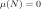
. A statement holds almost everywhere if the set where it fails is contained in a null set. Two measurable functions are equivalent if they agree almost everywhere.For measurable
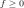
,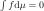
if and only if almost everywhere; consequently equivalent integrable
functions have the same integral, and a countable union of null sets is
null.
almost everywhere; consequently equivalent integrable
functions have the same integral, and a countable union of null sets is
null.
If off a null set , every simple
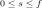
is supported in, so and the supremum is  .
Conversely let
.
Conversely let 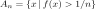
; then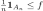
, so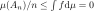
and each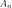
is null. Their union is , null by countable subadditivity – which
is also the last claim. If
, null by countable subadditivity – which
is also the last claim. If 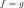
almost everywhere then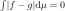
, and additivity gives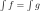
.Let
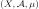
be a measure space. Write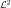
for the measurable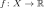
with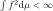
, and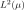
for the set of equivalence classes of such functions modulo equality almost everywhere, with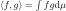
and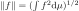
.is a real vector space and
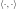
is a well-defined inner product on it; in particular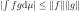
.For
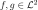
the inequality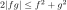
shows is integrable, so the pairing
is defined and finite; and
is integrable, so the pairing
is defined and finite; and
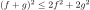
shows is closed under sums, hence a vector space. The pairing does not depend on the representatives, by the previous proposition. It is bilinear and symmetric by linearity of the integral, and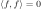
forces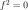
almost everywhere, that is in  – which
is exactly why the quotient by null functions is taken. The
Cauchy-Schwarz inequality holds in any inner product space.
– which
is exactly why the quotient by null functions is taken. The
Cauchy-Schwarz inequality holds in any inner product space.
is complete, hence a Hilbert space; and every sequence
converging in has a subsequence converging almost everywhere.
Let  be Cauchy. Choose
be Cauchy. Choose
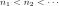
with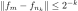
for all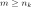
, and put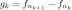
, so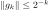
.Let
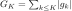
. By the triangle inequality in, 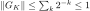
, so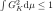
for every . The
. The 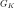
increase to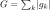
, so by monotone convergence ; hence is finite almost everywhere, and
therefore the series
is finite almost everywhere, and
therefore the series 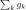
converges absolutely at almost every point. Define as its sum where it converges and
elsewhere, so
as its sum where it converges and
elsewhere, so 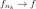
almost everywhere and is
measurable as an almost-everywhere limit of measurable functions.
Finally
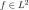
and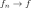
: given , take
with
, take
with 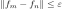
for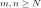
. For , Fatou's lemma applied to
, Fatou's lemma applied to
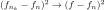
gives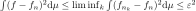
. Hence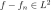
, so , and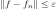
.The quotient by null functions is not fastidiousness: without it
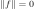
would not imply and the norm would not be a
norm. The price is that an element of has no value at a point,
which is why every later statement about it is "almost everywhere" –
and the subsequence clause above is the standard repair when a pointwise
statement is genuinely needed.